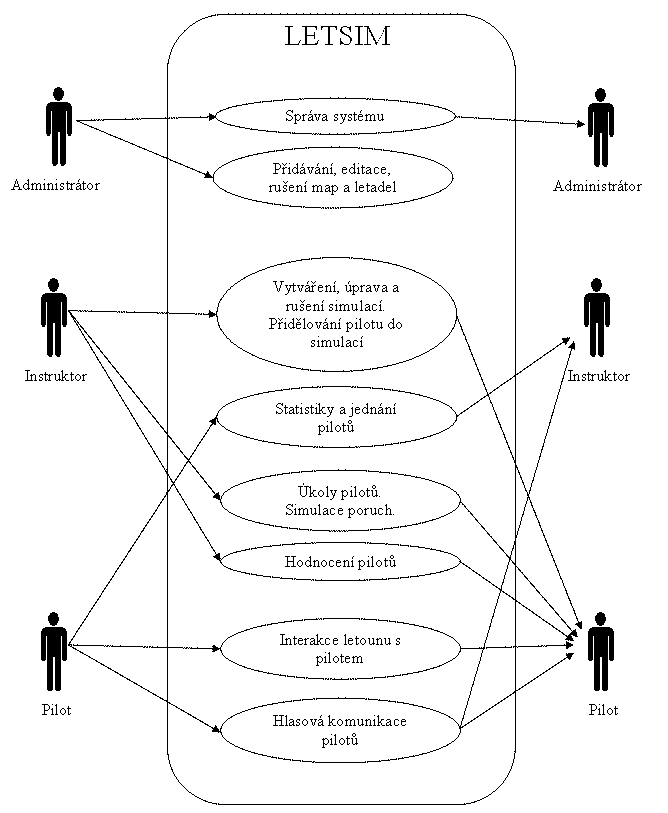
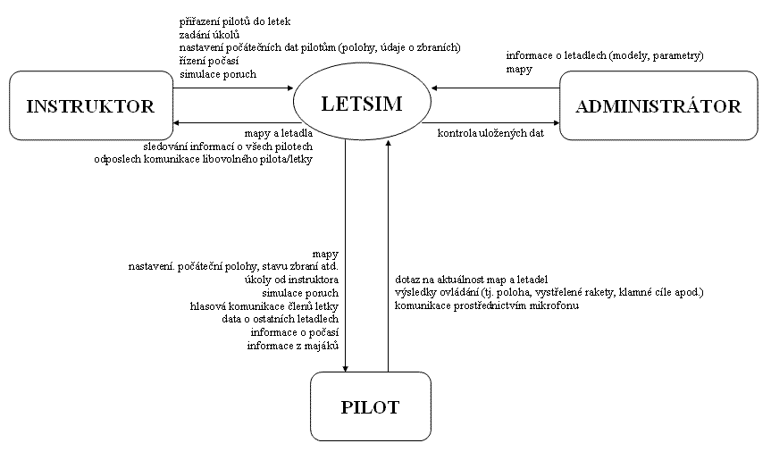
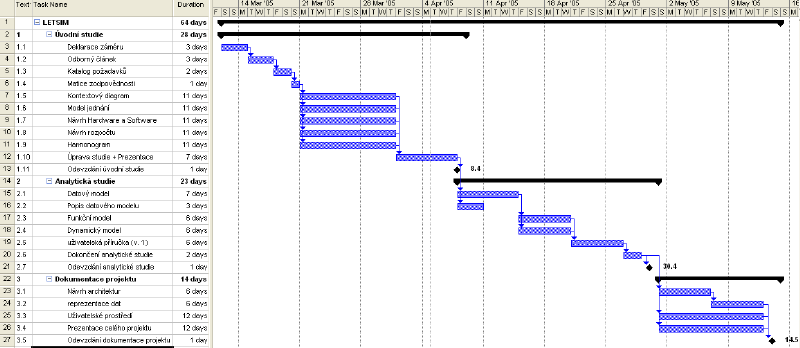
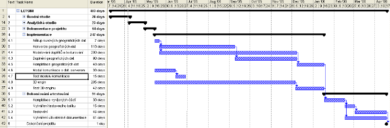

Stáhnout prezentaci | Matice zodpovìdnosti | Deklarace zámìru | Odbornı èlánek | Katalog po�adavkù | Model jednání | Kontextovı diagram | Harmonogram | Po�adavky na HW a SW | Návrh rozpoètu
| Michal Král | Michal Augustın | Jiøí Sejtko | Martin Prchlík | Michal Trs | |
|---|---|---|---|---|---|
| Úvodní studie | |||||
| Matice zodpovìdnosti | X | ||||
| Deklarace zámìru | X | ||||
| Katalog po�adavkù | X | ||||
| Model jednání | X | ||||
| Kontextovı diagram | X | ||||
| Harmonogram | X | ||||
| Po�adavky na HW a SW | X | ||||
| Návrh rozpoètu | X | ||||
| Prezentace úvod. st. | X | ||||
| Analytická studie | |||||
| Datovı model | X | ||||
| Popis datového modelu | X | ||||
| Funkèní model | X | ||||
| Dynamickı model | X | ||||
| Scénaøe pou�ití | X | ||||
| U�ivatelská pøíruèka | X | ||||
| Akceptaèní test | X | ||||
| Prezentace anal.st. | X | ||||
| Dokumentace projektu | |||||
| Návrh architektur | X | ||||
| Reprezentace dat | X | ||||
| U�ivatelské prostøedí | X | ||||
| Plán realizace | X | ||||
| Prezentace celého projektu | X | ||||
| Odevzdání dokumentace | |||||
| Michal Král | Michal Augustın | Jiøí Sejtko | Martin Prchlík | Michal Trs | |
Cílem projektu je vytvoøit aplikaci Simulátoru letadla. Aplikace bude
simulovat pøesnı zpùsob letu pro pilota nebo komunikace více aplikací spolu,èili
simulaci letu v letce nebo proti sobì.
Aplikaci budou vyu�ívat profesoøi pøi prvotní vıuce pilotù, pøi nácvikù
bojovıch akcí, zkušební lety.
Simulátor bude pracovat na stolních poèítaèích s potøebnım vybavením pro
simulaci a øízení letu.
Aplikace bude ukládat vısledky jednoivıch cviènıch letù.
Hlavním úkolem projektu je realistiènost celého simulátoru. Aplikace bude pøijímat a vysílat øadu signálu, se kterımi bude dále pracovat nebo posílat dalším aplikacím, kterım se budeme vìnovat dále.
Aplikace bude pøijímat informace o letu z leteckıch vì�í, radarového systému
letadla (tyto informace budou generovány aplikací). Jmenovitì se jedná o vıšku,
rychlost, náklon letadla pøíènì i podélnì, stav podvozku, poèasí atd.. Další
dùle�itou funkcí bude komunikace s okolím.
Komunikace se bude provádìt pomocí sluchátek a mikrofónu, ta bude slyšitelná
pouze pro zvolené u�ivatele.
Všechny tyto informace budou zpracovány aplikací a promítnuty na monitoru.
Další funkcí simulátoru bude jednání pilota simulovat pro okolí a pro nìho.
Pilot bude moci reagovat na let.
Jeho mo�ností je mnoho, stejnì jako v opravdovém letadle. Samotné ovládání letu
bude mo�né pomocí joysticku, rychlost letu pomocí ovladaèe tahu motoru, vıšku
letu pomocí klapek, (vše se dá simulovat pomocí klávesnice).
Bìhem bojové situace bude moci pilot reagovat odpálením rakety nebo støelbou z
palubního kulometu.
A pomocí klamnıch cílù uhıbat nepøátelskım raketám. Samozøejmì i katapult. Všechny
tyto akce budou
vyhodnoceny aplikací a dále pou�ity.
Mo�ná nejdùle�itìjší funkcí aplikace bude komunikace simulátoru s dalšími
bì�ícími simulátory.
Aplikace vyhodnotí stávající hodnoty a pošle je všem pøipojenım simulátorùm.
Vyèká na akce jednotlivıch pilotù a pøijme jejich reakce.
Nyní se podíváme na pou�itelnost simulátoru. Simulátor se dá vyu�it v single
i multi verzi.
Single verze znamená, �e simulátor se dá pou�ít pro cvièení zaèáteèníkù pilotù,
základní ovládání letadla,
bojové nácviky pro generovanım protivníkùm. V multi verzi je spolu propojeno
nìkolik simulátorù.
Tato verze se dá pou�ít pro cvièení letu v letce, boji proti generovanım
protivníkùm nebo boji proti sobì.
Propojení jednotlivıch aplikací bude probíhat na úrovni komunikace stolních
poèítaèù pomocí sí�ovıch karet.
Hlavním správcem aplikace bude instruktor, kterı bude moci nastavovat poèasí
letu, poèet a typ nepøátel a
bude moci i simulovat nìkteré závady na letadle. U�ivateli aplikace budou
piloti ve vıcviku, kterım je tato simulace urèena.
Další osoba, která se bude podílet na provozu systému bude administrator. Ten bude zajiš�ovat správnı chod všech poèítaèù a také serveru, na nìm� budou ulo�ena data o krajinì i letadlech. Ze serveru si v pøípadì potøeby stahují aktualní data jednotliví klienti. Tzn. pokud zvolená krajina dosud nebyla na daném poèítaèi pou�ita (tedy v nìm není ulo�ené a musí se stáhnout ze serveru) nebo pokud došlo ke zmìnì od poslední synchronizace. Za zadání všech dat do serveru je zodpovìdnı administrátor.
Závìrem je potøeba zadavatele upozornit na rozsáhlost celého projektu. Kde bude potøeba pou�ít nejnovìjších technologií a potøeba odborného dozoru bìhem tvorby. Co� se vše mù�e promítnout do ceny projektu.

Zde je k dispozici soubor ve formátu Microsoft Word 2003.

Zde je k dispozici soubor ve formátu Microsoft Word
2003.
Pro zvìtšení klikni na obrázek!

Pro zvìtšení klikni na obrázek!

Soubor MS Project ke sta�ení
Odhad nákladù je proveden metodou COCOMO. Pøedpokládanı rozsah projektu byl stanoven na 50000 øádek zdrojového textu (50 KLOC). Z toho 20000 3D engine.
| Nároènost | 175 èlovìko-mìsícù |
| Potøebnı èas | 13 mìsícù |
| Lidí | 13,5 |
| size | 50000 | size (in KLOC) |
| mode | 1.20 | Embedded |
| cplx | 1.30 | Product Complexity |
| stor | 1.21 | Main Storage Constraint |
| acap | 0.86 | Analyst Capability |
| aexp | 0.91 | Applications Experience |
| pcap | 0.70 | Programmer Capability |
| vexp | 0.90 | Virtual Machine Experience |
| lexp | 0.95 | Programming Language Experience |
| modp | 0.82 | Modern Programming Practices |
| tool | 0.91 | Use of Software Tools |
| sced | 1.04 | Required Development Schedule |
| LETSIM | 6 420 300,00 Kè |
| Úvodní studie | 109 440,00 Kè |
| Deklarace zámìru | 4 560,00 Kè |
| Odbornı èlánek | 4 560,00 Kè |
| Katalog po�adavkù | 3 040,00 Kè |
| Matice zodpovìdnosti | 1 520,00 Kè |
| Kontextovı diagram | 16 720,00 Kè |
| Model jednání | 16 720,00 Kè |
| Návrh Hardware a Software | 16 720,00 Kè |
| Návrh rozpoètu | 16 720,00 Kè |
| Harmonogram | 16 720,00 Kè |
| Úprava studie + Prezentace | 10 640,00 Kè |
| Odevzdání úvodní studie | 1 520,00 Kè |
| Analytická studie | 47 120,00 Kè |
| Datovı model | 10 640,00 Kè |
| Popis datového modelu | 4 560,00 Kè |
| Funkèní model | 9 120,00 Kè |
| Dynamickı model | 9 120,00 Kè |
| u�ivatelská pøíruèka (v. 1) | 9 120,00 Kè |
| Dokonèení analytické studie | 3 040,00 Kè |
| Odevzdání analytické studie | 1 520,00 Kè |
| Dokumentace projektu | 56 240,00 Kè |
| Návrh architektur | 9 120,00 Kè |
| reprezentace dat | 9 120,00 Kè |
| U�ivatelské prostøedí | 18 240,00 Kè |
| Prezentace celého projektu | 18 240,00 Kè |
| Odevzdání dokumentace projektu | 1 520,00 Kè |
| Implementace | 5 327 500,00 Kè |
| Nákup surovıch geografickıch dat | 420 000,00 Kè |
| Konverze geografickıch dat | 472 500,00 Kè |
| Modelování doplòkù a texturování | 1 170 000,00 Kè |
| Doplnìní geografickıch dat | 270 000,00 Kè |
| Kompletace geografickıch dat | 90 000,00 Kè |
| Modul komunikace s dat. serverem | 135 000,00 Kè |
| Test modulu komunikace | 30 000,00 Kè |
| 3D engin | 2 500 000,00 Kè |
| Test 3D enginu | 240 000,00 Kè |
| Dokonèování a testování | 880 000,00 Kè |
| Kompletace vyvíjenıch èástí | 60 000,00 Kè |
| Vytváøení testovacího balíku | 60 000,00 Kè |
| Testování | 540 000,00 Kè |
| Vytváøení u�ivatelské dokumentace | 220 000,00 Kè |
| Dokonèení projektu | 20 000,00 Kè |
| Polo�ka | Typ | Cena za kus | Kusù | Cena |
| server | Dell PowerEdge 1800 - SATA | 182 280 | 1 | 182 280 |
| diskové pole | Dell PowerVault 220S/221S SCSI Drive Enclosure 10 x 73 GB | 404 000 | 1 | 404 000 |
| zálo�ní zdroj UPS | APC Back-UPS RS 1500 | 8849 | 1 | 8849 |
| desktop | Dell OptiPlex GX280 SD | 26 100 | 10 | 261 000 |
| projektor | DELL 2200MP | 24 900 | 10 | 249 000 |
| plátno | BRAUN projekèní plátno 180 x 180 cm | 2800 | 10 | 28 000 |
| ovládací zaøízení | Saitek X52 Flight Control System | 2789 | 10 | 27 890 |
| Reproduktory | Genius SW-5.1 Home Theater | 2648 | 10 | 26 480 |
| Ethernet switch | PC 5212 Managed Switch (12port, All Gigabit Ports) | 39 900 | 1 | 39 900 |
| UTP kabelá� + pøísl. | kabel, konektory | 15 | 150 m | 2250 |
Celková cena hardwaru je pøibli�nì 1 230 000 Kè.
Podrobnı rozpis konfigurace HW.
| Polo�ka | Typ | Cena za kus | Kusù | Cena |
| Operaèní systém stanic | Windows XP prof | 0 (v cenì HW) | 10 | 0 |
| Operaèní systém serveru | Linux Debian stable | 0 | 1 | 0 |
| Databáze | FireBird | 0 | 1 | 0 |
| Mapovı podklad | Digitální mapa ÈR 1:25 000 | 419 572 | 1 | 419 572 |
| Další mapové podklady | Digitální mapy ostatních státù | dle po�adavkù | dle po�adavkù | dle po�adavkù |
Celková cena softwaru a dat je pøibli�nì 420 000 Kè. Zále�í však na konkrétních po�adavkách zákazníka, které další mapy si pøikoupí. Proto vısledná cena mù�e bıt nìkolikanásobnì vyšší.
{kind=link}
{kind=link}